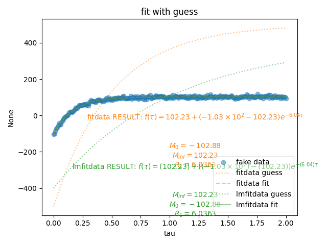

Note
Go to the end to download the full example code
Fitting Data (Nonlinear + Symbolic)¶
This example creates fake data with noise then fits the exponential with the fitdata function.
{M_inf, M_0, R_1}
{\bf Warning:} You have no error associated with your plot, and I want to flag this for now
----- Results for fitdata: -----
output for fitdata: {'M_0': -101.31178480026007, 'M_inf': 102.28085672058833, 'R_1': 5.980377869772943}
latex for fitdata: $f(\tau)=102.28 + \left(-1.01\times 10^{2} - 102.28\right) e^{- 5.98 \tau}$
$T_1$ for fitdata, 0.1672135142253088
----- Results for lmfitdata: -----
output for lmfitdata: {'M_inf': 102.2841476766555, 'M_0': -101.28393805288175, 'R_1': 5.978460581918396}
latex for lmfitdata: $f(\tau)=(102.28) + \left((-1.01\times 10^{2}) - (102.28)\right) e^{- (5.98) \tau}$
$T_1$ for lmfitdata, 0.1672671394747434
1: fit with guess |||None
from pylab import *
from pyspecdata import *
import sympy as sp
# {{{ this is the contents of pylab.py -- works
# need to go through and figure out which lines
# are actually needed and which are not
# -- I have already stripped out some
from lmfit import Parameters, minimize
from matplotlib.pyplot import figure, subplot, show, xlim, ylim, plot, gca
from numpy import * # I think it wasn't importing from numpy b/c it seems we're inside sphinx
def list_symbs(f):
# {{{ this is just to show all the parameters
list_symbs = []
for j, k in f.output().items():
s_repr = sp.latex(sp.Symbol(j))
list_symbs.append(f"${s_repr} = {k:0.5g}$")
list_symbs = "\n".join(list_symbs)
# }}}
return list_symbs
# }}}
fl = figlist_var()
# {{{creating a fake data recovery curve
tau = nddata(r_[0:2:256j], "tau")
fake_data = 102 * (1 - 2 * exp(-tau * 6.0))
fake_data.add_noise(5.0)
# }}}
# {{{ define the expression of the functional form once, and then use it
# for both types of classes
M0, Mi, R1, vd = sp.symbols("M_0 M_inf R_1 tau", real=True)
functional_form = Mi + (M0 - Mi) * sp.exp(-vd * R1)
# }}}
with figlist_var() as fl:
fl.next("fit with guess")
fl.plot(fake_data, "o", alpha=0.5, label="fake data")
def show_guess_and_fit(fitinst, thislabel, x_text, y_text):
"show the guess and the fit -- group as a function so we're sure we do this consistently"
fl.next("fit with guess")
fitinst.settoguess()
guess_line = fl.plot(
fitinst.eval(100), ":", alpha=0.5, label=f"{thislabel} guess"
)
thiscolor = guess_line[0].get_color()
fitinst.fit()
print("-" * 5, f"Results for {thislabel}:", "-" * 5)
print(f"output for {thislabel}:", fitinst.output())
print(f"latex for {thislabel}:", fitinst.latex())
T1 = 1.0 / fitinst.output("R_1")
print(f"$T_1$ for {thislabel}, {T1}")
this_ls = "-"
if thislabel == "fitdata":
this_ls = "--"
fit_line = fl.plot(
fitinst.eval(100),
ls=this_ls,
color=thiscolor,
alpha=0.5,
label=f"{thislabel} fit",
)
ax = gca()
text(
x_text,
y_text,
f"{thislabel} RESULT: %s" % fitinst.latex(),
ha="center",
va="center",
color=thiscolor,
transform=ax.transAxes,
)
text(
x_text,
y_text,
(3 * "\n") + list_symbs(fitinst),
ha="center",
va="top",
size=10,
color=thiscolor,
transform=ax.transAxes,
)
# {{{ use fitdata
fitdata_instance = fitdata(fake_data)
fitdata_instance.functional_form = functional_form
fitdata_instance.set_guess({M0: -500, Mi: 500, R1: 2})
show_guess_and_fit(fitdata_instance, "fitdata", 0.6, 0.5)
# }}}
# {{{ lmfitdata method
lmfitdata_instance = lmfitdata(fake_data)
lmfitdata_instance.functional_form = functional_form
lmfitdata_instance.set_guess(
M_0=dict(value=-500, max=0, min=-501),
M_inf=dict(value=500, max=501, min=0),
R_1=dict(value=1, max=10, min=1),
)
show_guess_and_fit(lmfitdata_instance, "lmfitdata", 0.6, 0.25)
# }}}
Total running time of the script: (0 minutes 0.471 seconds)